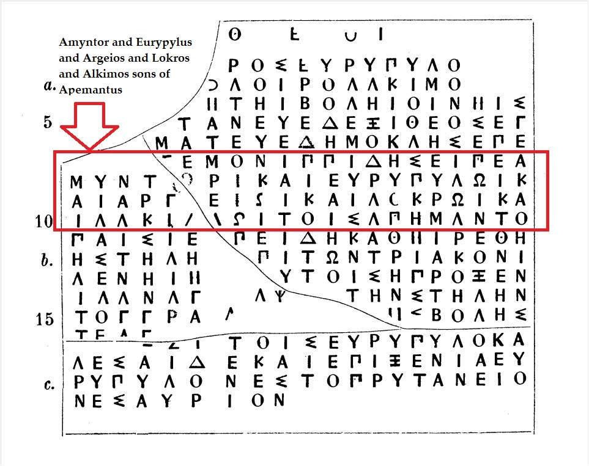

Listen to the story of a Thasian family and its connections with Athens!
Over een paar weken gaan jullie een eigen podcast opnemen. Het resultaat, een MP3-bestand, kun je toevoegen aan je website. Om te zien hoe dat werkt kunnen we hier, als voorbeeld, luisteren naar Nocturne Op. 9 No. 1 van Frederic Chopin: